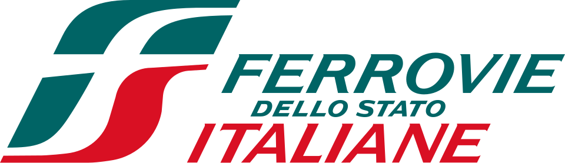

페로비에 델로 스타토 이탈리아네 Ferrovie dello Stato Italiane
페로비에 델로 스타토 이탈리아네(Ferrovie dello Stato Italiane)는 이탈리아 철도망의 기반시설과 서비스를 운영하는 국영 철도 지주회사이다. 자회사 트레니탈리아는 이탈리아에서 가장 큰 철도 운영기업이다.
최종 업데이트

페로비에 델로 스타토 이탈리아네는 어떤 브랜드인가
페로비에 델로 스타토 이탈리아네는 1905년 이탈리아 정부가 설립한 국영 철도 지주회사이다. 본사는 로마에 있으며, 모기업은 Ministry of Economy and Finance이다.
여러 자회사를 통해 이탈리아 철도망의 기반시설과 서비스를 운영한다. 이름은 이탈리아 국영 철도 주식회사라는 뜻으로 풀이되며, 이전 명칭은 페로비에 델로 스타토(Ferrovie dello Stato, FS)이다.
자회사 트레니탈리아는 이탈리아에서 가장 큰 철도 운영기업이다. 이 밖에 첸토스타치오니, 레테 페로비아리아 이탈리아나, 이탈페르, 페르세르비치, FS 로지스티카, FS 시스테미 우르바니, 페르크레딧 등을 소유하고 있다.
페로비에 델로 스타토 이탈리아네는 어떻게 시작되고 성장했나
페로비에 델로 스타토 이탈리아네는 1905년 이탈리아 정부가 설립한 국영 철도 기업이다. 본사는 이탈리아 로마에 있다.
이전 명칭은 페로비에 델로 스타토(Ferrovie dello Stato, FS)이다. 최고경영자(CEO)는 로렌초 네치(Lorenzo Necci)가 1989년부터 1996년까지, 잔카를로 치몰리(Giancarlo Cimoli)가 1996년부터 2004년까지 맡았다.
이후 엘리오 카타니아(Elio Catania)가 2004년부터 2006년까지, 마우로 모레티(Mauro Moretti)가 2006년부터 2014년까지 맡았다.
페로비에 델로 스타토 이탈리아네의 브랜드 아이덴티티는 무엇인가
이탈리아 국영 철도 지주회사로, 이탈리아에서 가장 큰 철도 운영기업인 트레니탈리아를 자회사로 두고 있다는 점이 특징이다.
페로비에 델로 스타토 이탈리아네의 대표 제품과 서비스는 무엇인가
페로비에 델로 스타토 이탈리아네의 사업은 이탈리아 철도망의 기반시설과 서비스를 운영하는 것으로 구성된다. 자회사 트레니탈리아는 이탈리아에서 가장 큰 철도 운영기업이다.
소유한 회사로는 트레니탈리아, 첸토스타치오니, 레테 페로비아리아 이탈리아나, 이탈페르, 페르세르비치, FS 로지스티카가 있다. FS 시스테미 우르바니, 부시탈리아 시타 노르드, 페르크레딧, 그란디 스타치오니, 네티네라 사를도 소유 회사에 포함된다.
이들 회사는 모두 지주회사인 페로비에 델로 스타토 이탈리아네가 소유한다.
페로비에 델로 스타토 이탈리아네는 지금 어떤 상태인가
현재 모기업은 Ministry of Economy and Finance이다. 본사는 로마에 있으며, 이탈리아 철도망의 기반시설과 서비스를 운영하는 국영 철도 지주회사이다.
자회사 트레니탈리아는 이탈리아에서 가장 큰 철도 운영기업이다. 역대 CEO 가운데 마우로 모레티(Mauro Moretti)는 2006년부터 2014년까지 재임했다.
페로비에 델로 스타토 이탈리아네 로고는 어떻게 변해왔나
시기는 위키데이터 로고 기간 또는 위키미디어 커먼즈 파일 정보 기준입니다. 이미지를 누르면 원본 파일과 라이선스를 볼 수 있습니다.
자주 묻는 질문
페로비에 델로 스타토 이탈리아네는 어느 나라 브랜드인가요?
페로비에 델로 스타토 이탈리아네는 이탈리아의 모빌리티 브랜드입니다.
페로비에 델로 스타토 이탈리아네는 언제 설립되었나요?
페로비에 델로 스타토 이탈리아네는 1905년 설립되었습니다.
페로비에 델로 스타토 이탈리아네의 브랜드 아이덴티티는 무엇인가요?
이탈리아 국영 철도 지주회사로, 이탈리아에서 가장 큰 철도 운영기업인 트레니탈리아를 자회사로 두고 있다는 점이 특징이다.
페로비에 델로 스타토 이탈리아네의 대표 제품은 무엇인가요?
페로비에 델로 스타토 이탈리아네의 사업은 이탈리아 철도망의 기반시설과 서비스를 운영하는 것으로 구성된다.
페로비에 델로 스타토 이탈리아네는 어느 기업이 소유하고 있나요?
현재 모기업은 Ministry of Economy and Finance이다.
페로비에 델로 스타토 이탈리아네의 창업자는 누구인가요?
페로비에 델로 스타토 이탈리아네의 창업자는 이탈리아 정부입니다(위키데이터 기준).
페로비에 델로 스타토 이탈리아네의 본사는 어디에 있나요?
페로비에 델로 스타토 이탈리아네의 본사는 로마에 있습니다(위키데이터 기준).
출처와 검증
페로비에 델로 스타토 이탈리아네 관련 참고: 공식 웹사이트 · 위키데이터 Q83823 · 한국어 위키백과 · 영어 위키백과. 브랜드명은 한글과 원어를 함께 표기하되 데이터에 없는 표기는 만들지 않습니다. 기원 국가·설립연도는 검수된 정의문에서 확인된 값을 우선하고, 없을 때만 공식 웹사이트 URL이 일치하는 위키데이터 개체의 값을 씁니다. 탄생일의 월·일은 위키데이터, 위키백과 정보상자, 본문 가운데 같은 연월로 확인되는 값만 싣고, 출처끼리 다르면 싣지 않습니다. 위키데이터 값은 2026-11-13 기준입니다.